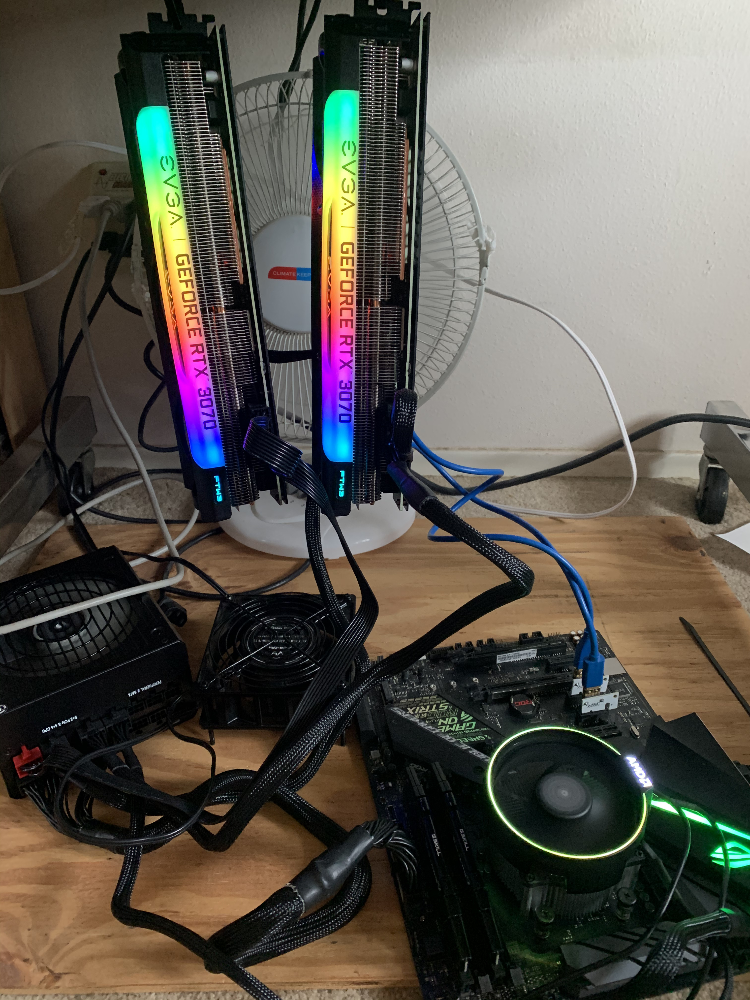
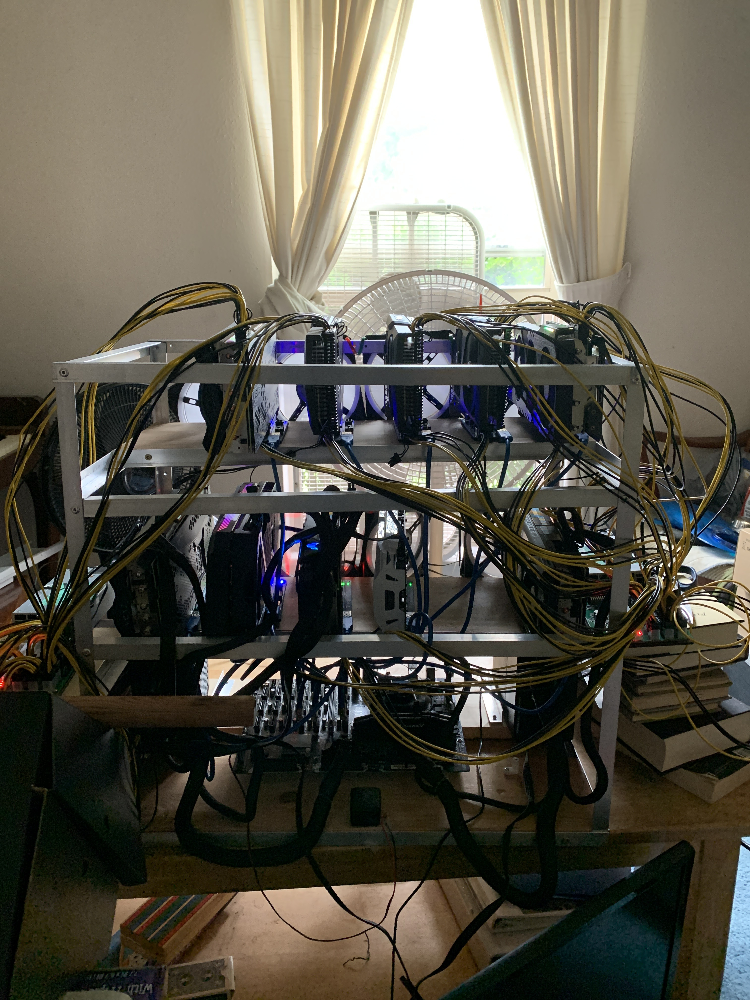
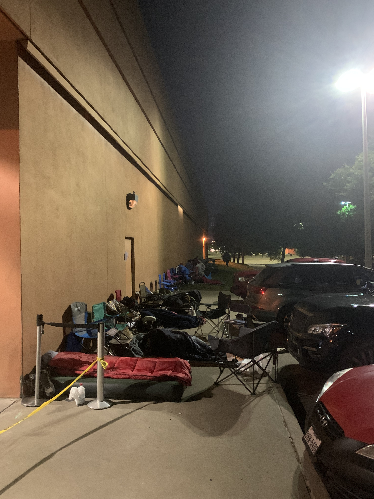
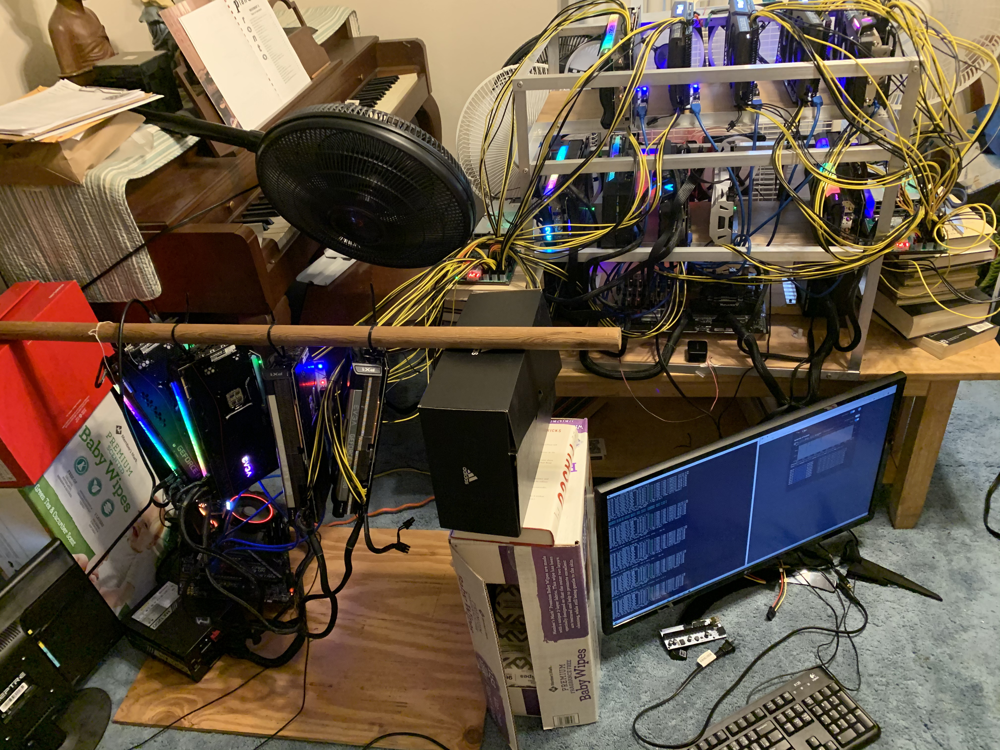
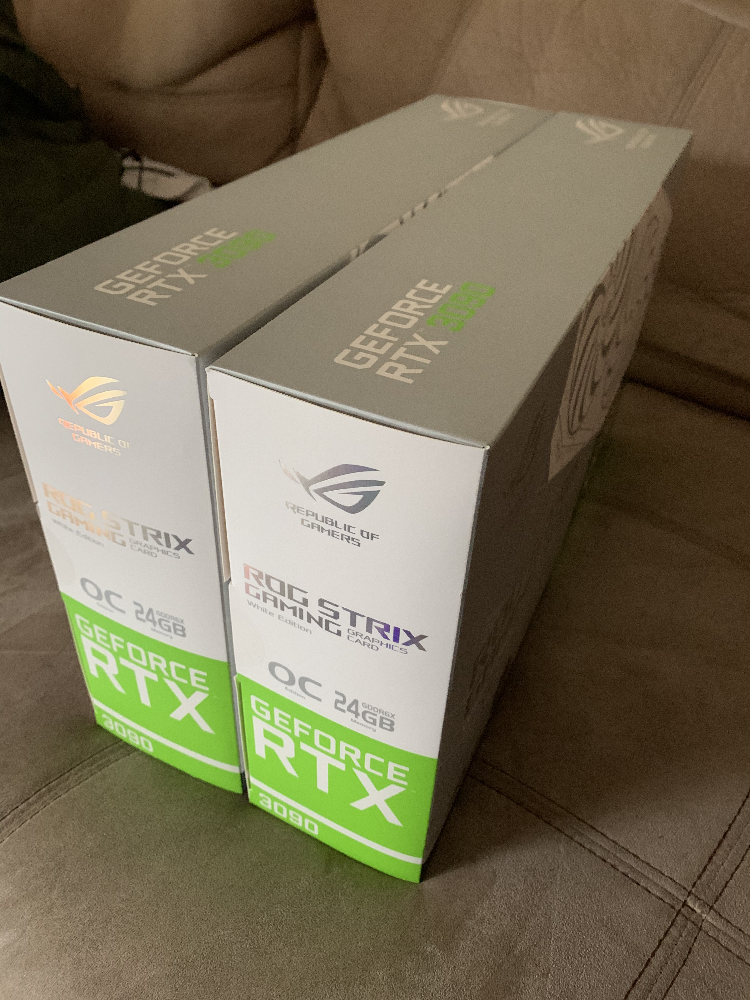
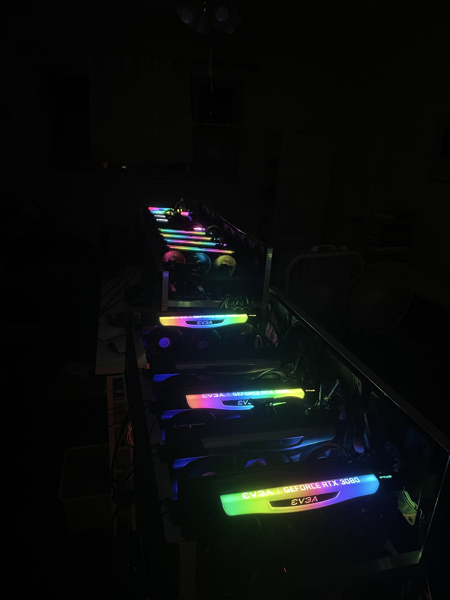
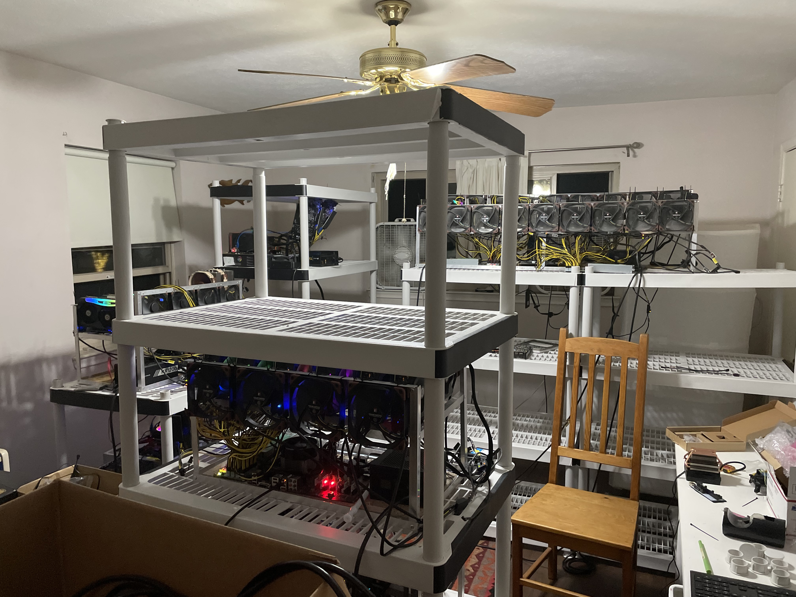
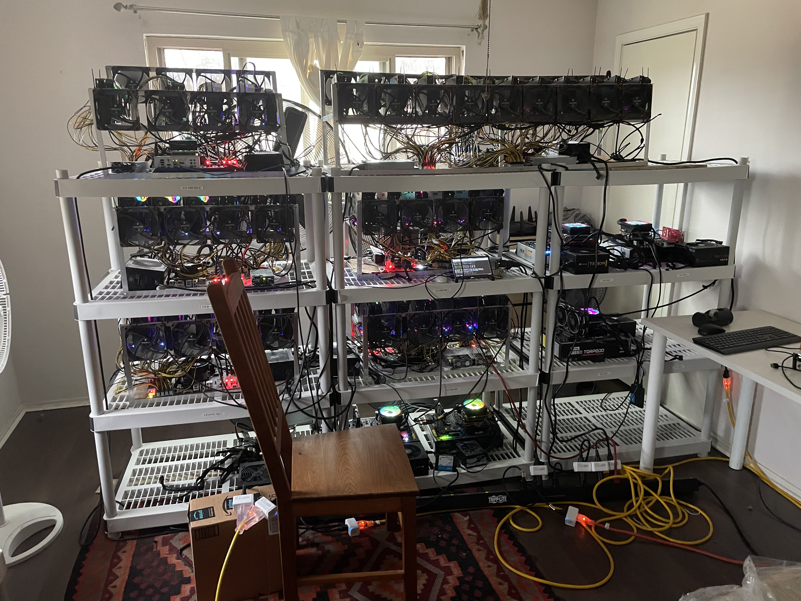
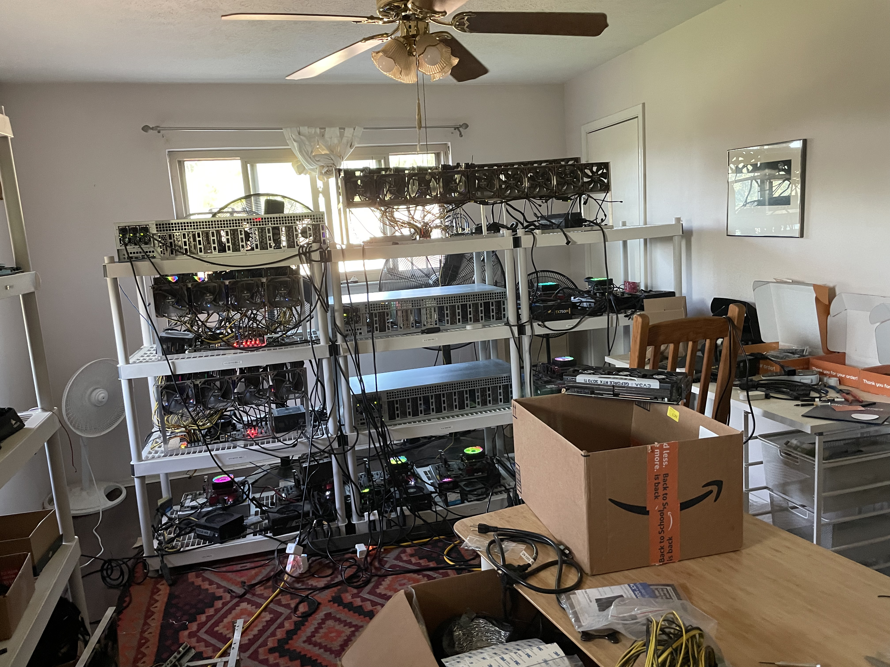
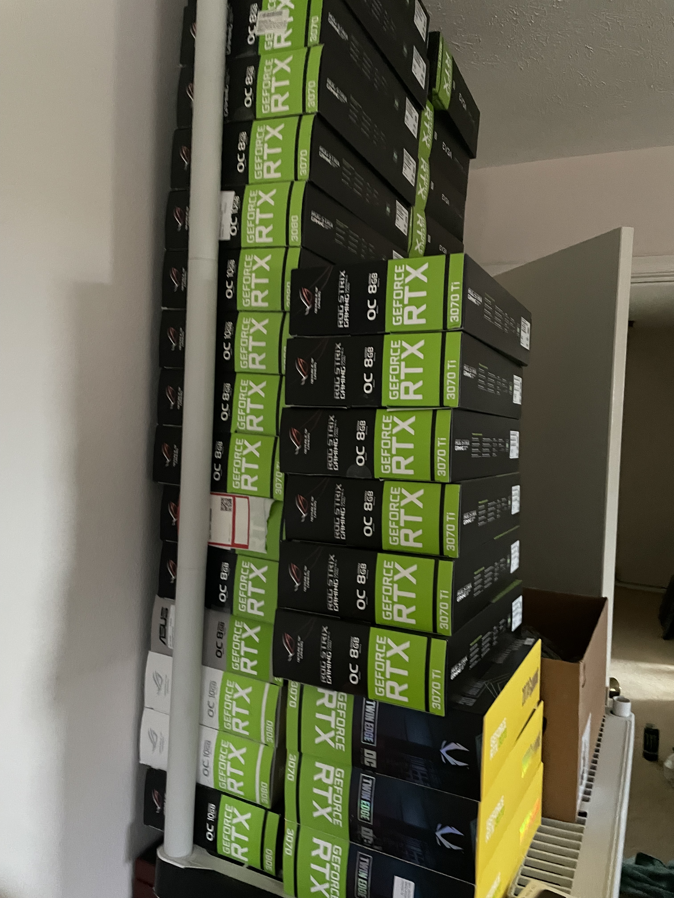

Mining Rig
From March, 2021 to August, 2021, I camped at Micro Center Dallas and bought 30 series GPUs to
create and expand the Phillips mining rig. At its peak, the mining rig ran 51 GPUs, 10 CPUs, and several
Helium miners in my former bedroom. The mining rig has four owners, myself, Nate Phillips (brother), Abram Gonzalez (friend), and Alex Sanchez (friend).
Initially, there was no intention on mining with GPUs. I wanted a computer upgrade, but I realized that I could make money and learn a lot from the people there, so I continued. During March 2021 people showed up early in the morning and everyone was satisfied with their card. By the time
late May came however, people would not hesitate to camp for a day for a GPU. At the peak, people camped out for five days for a GPU.
Here are some pictures that mark the progression of the rig:

This is my first rig, which I created by ordering risers and gutting my main PC.

A few months in we started accumulating many GPUs, so we created a two level frame and bought the B250 Mining Motherboard. I came to learn that this was a horrible setup and ran into various stability issues with this setup.

This was the Winter that there was an intense winter storm across Texas that claimed peoples' power for days across Texas. It was freezing!

As I got more aquainted with the community, I made minor optimizations, slowly getting a more industrialized setup.

This was a good day, I bought these for 2.5k each and scalped them shortly after because I couldn't afford 3090s, let alone the whites.

By the time summer came, my brother was back from school and we set up my room for optimal airflow.

This was our most efficient setup, where we blocked the AC and had industrial fans blowing air in and out.

We kept track of the temperature, and the room would get to 150 degrees lol. If I had to do a repair during the summer and accidentally touched the metal, it burned like a hot pan on the stove.

This is the most optimal setup. Notice the CPU miners toward the right and bottom of the rack.

All our GPUs.